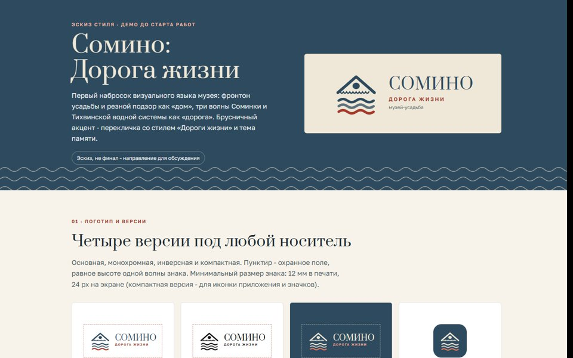
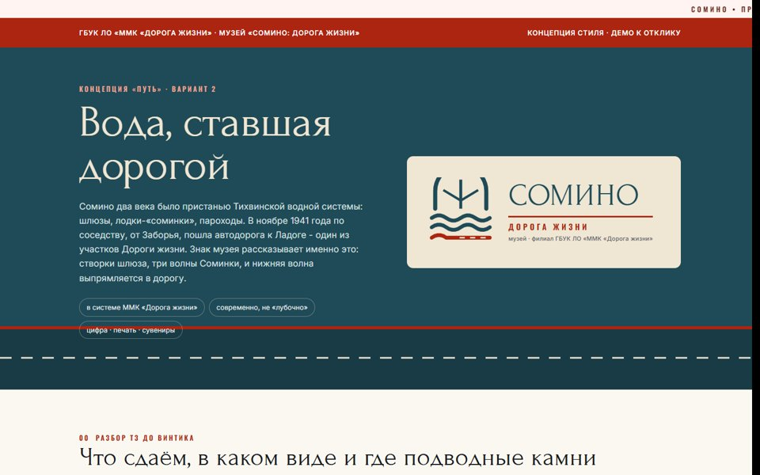

Два варианта
Выберите вариант для просмотра
Оба сделаны бесплатно до старта работ по вашему ТЗ. Второй - подробнее: в системе стиля ГБУК ЛО «ММК «Дорога жизни», с разбором ТЗ, талисманами, носителями и планом на 13 дней.

Вариант 1
Эскиз стиля
Знак «фронтон и волны», палитра, шрифты, паттерны, первый набросок талисмана, план по датам.
Открыть вариант 1 →
Вариант 2новый
Концепция «Путь»
Вода, ставшая дорогой: стиль в системе ММК, разбор ТЗ, 5 талисманов, навигация, полиграфия, сувениры, бюджет и график.
Открыть вариант 2 →